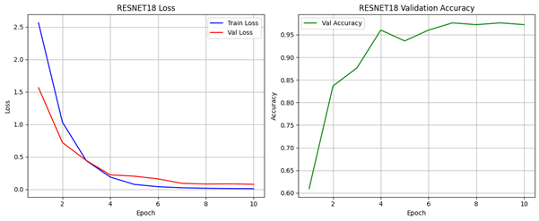
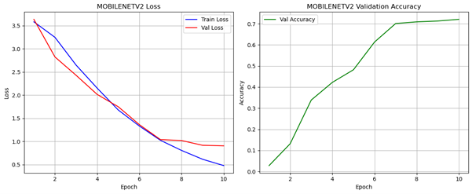

Model Design and Initial Experiments#
Authors: Usher Raymond Abainza, Dane Casey Casino, Kein Jake Culanggo, and Karylle dela Cruz
1 Model Design#
To evaluate the performance of different convolutional neural network (CNN) architectures on the image-based sign recognition task, three widely used deep learning models were implemented and trained from scratch: VGG16, ResNet18, and MobileNetV2. These architectures represent three distinct design philosophies, namely deep sequential networks, residual learning, and lightweight mobile-friendly models. This allows a comprehensive comparison in terms of accuracy, stability, representational capacity, and training behavior.
The selection of these architectures was guided by their contrasting structural biases and the complementary insights they provide about feature extraction in hand-sign imagery. VGG16 serves as a classical deep stack of convolutional layers without shortcut connections, making it ideal for examining how depth alone influences discriminative performance on fine-grained gesture differences. ResNet18, with its residual skip connections, mitigates vanishing gradients and facilitates the learning of more stable low-level and mid-level features, which is theoretically advantageous for gestures that exhibit subtle variations in contour and finger positioning. MobileNetV2, designed around inverted residual blocks and depthwise separable convolutions, prioritizes computational efficiency at the cost of reduced expressiveness, making it an ideal reference point for evaluating the trade-off between model compactness and recognition accuracy.
A unified function was developed to construct each model by replacing the final fully connected layers with task-specific classifiers. This ensured consistent output dimensions across architectures while keeping their internal feature extraction mechanisms intact.
def build_model(name, num_classes):
name = name.lower()
if name == "vgg16":
model = models.vgg16(weights=None)
model.classifier[6] = nn.Linear(4096, num_classes)
elif name == "resnet18":
model = models.resnet18(weights=None)
model.fc = nn.Linear(model.fc.in_features, num_classes)
elif name == "mobilenetv2":
model = models.mobilenet_v2(weights=None)
model.classifier[1] = nn.Linear(model.classifier[1].in_features, num_classes)
else:
raise ValueError("Choose: vgg16, resnet18, mobilenetv2")
return model
This design choice preserves the architectural priors of each model and restricts modifications only to the classification head. Such a configuration ensures that the comparison across architectures is controlled and scientifically valid, since the representational backbone remains unchanged and the only differing factor is the inductive bias inherent to each architecture. The fixed output structure also maintains compatibility with cross-entropy loss functions and supports fair evaluation of gradient behavior, optimization dynamics, and generalization capacity.
VGG16: The final classifier layer was replaced with a new linear layer that maps 4096 features to the number of output classes.
ResNet18: The fully connected layer was replaced with a linear layer that maps the model’s input feature size to the number of output classes.
MobileNetV2: The last classifier block was updated by replacing the output layer with a linear layer that maps its input feature size to the number of output classes.
These modifications introduce minimal architectural disruption while enabling the backbone to learn task-specific features. VGG16’s dense classifier relies on a high-dimensional 4096-unit representation, which typically enhances separability for fine-grained image tasks. ResNet18’s more compact final layer aligns with the residual model’s dependence on multi-level feature aggregation. MobileNetV2 maintains a low-parameter output layer consistent with its efficiency-focused design, which is especially relevant when analyzing the effect of constrained capacity on gesture differentiation.
Training, validation, and testing were standardized across models using a shared pipeline. The train_model function handled epoch-wise optimization, recorded training history, and automatically saved the best-performing weights using validation accuracy as the criterion. The test_model function then evaluated the saved best model on the test dataset to obtain unbiased performance metrics. Finally, run_experiment streamlined the entire workflow for reproducibility and ensured consistent execution across all architectures.
This unified pipeline ensures that all models experience identical data distribution, learning rate schedules, and optimizer behaviors. The use of validation accuracy for checkpoint selection reduces the risk of overfitting-driven model retention and emphasizes generalization performance rather than raw training loss minimization. In addition, the structured logging of loss and accuracy trajectories permits cross-model comparison of convergence rates, instability patterns, and susceptibility to overfitting, all of which contribute to understanding the architectural strengths and limitations of each network.
2 Initial Experiments#
To ensure fair and consistent evaluation across architectures, all models were trained under identical hyperparameters, optimization settings, and data splits. This standardization allows differences in performance to be attributed solely to the model architecture rather than training conditions.
Table 2-1. Training Configuration
Component |
Description |
|---|---|
Loss Function |
CrossEntropyLoss |
Optimizer |
Adam (learning rate = 0.0001) |
Training Duration |
10 epochs |
Hardware |
GPU-accelerated environment (CUDA when available) |
Training from scratch on a relatively small dataset introduces several challenges, including slower convergence, higher variance in gradient updates, and increased dependence on robust regularization. Because the ASL dataset contains limited intra-class diversity, models with large capacity such as VGG16 are expected to converge rapidly but risk memorizing high-frequency details if not properly constrained. ResNet18, benefiting from residual connections, tends to stabilize feature learning earlier in training, which often results in smoother validation curves. MobileNetV2, with its lightweight inverted bottlenecks, may struggle to extract sufficiently rich features when trained from scratch, leading to noisier learning trajectories and slower accuracy gains. The shared training configuration therefore serves as an important experimental control for isolating these architectural phenomena.
Each model’s training process included forward propagation, loss computation, backpropagation, parameter updates, validation at every epoch, automatic saving of the best-performing weights, and logging of training and validation metrics. A custom plotting utility was also implemented to visualize loss and accuracy trends for each architecture. Such visualization supports analytical assessment of underfitting, overfitting, plateauing behavior, and epoch-level instability, which are all critical when interpreting deeper architectural behavior.
3 Initial Results#
Prior to reporting final test accuracies, it is necessary to contextualize the results with respect to model architecture, training configuration, and dataset characteristics. The subsequent evaluation quantifies each model’s ability to extract relevant features from static ASL hand-sign images and to generalize to unseen samples. Observed differences in performance are interpreted in terms of representational capacity, depth, residual connectivity, and parameter efficiency, providing a technical basis for understanding the relative strengths and limitations of each architecture in the context of fine-grained gesture classification.

Figure 3-1. ResNet18 Training Performance: Loss and Validation Accuracy Curves
ResNet18 achieved a final test accuracy of 0.9643 when trained from scratch under identical conditions, demonstrating the efficacy of residual learning in the sign recognition task. The architecture’s skip connections are designed to ensure stable feature learning and efficient gradient propagation in deep networks, which is reflected in the training history: both training and validation loss curves exhibited rapid, smooth convergence, stabilizing below 0.1 by the final epochs, while validation accuracy showed a consistent, monotonic increase, peaking above 0.95. This strong performance is particularly noteworthy because it was obtained with a significantly lower parameter count (approximately 11.7 million) compared to other high-performing models, confirming that ResNet18 successfully leverages the architectural efficiency of residual blocks to achieve excellent generalization capacity. The model’s ability to maintain high accuracy while utilizing fewer parameters underscores its suitability for fine-grained hand-sign classification and suggests that residual learning can compensate for reduced network depth when feature extraction is efficiently managed.

Figure 3-2. VGG16 Training Performance: Loss and Validation Accuracy Curves
VGG16 achieved a final test accuracy of 0.9722, making it the highest-performing model among the architectures tested. Implemented as a representative of deep sequential networks, VGG16 is characterized by a large number of layers and uniform 3×3 convolutional kernels, providing substantial representational capacity to capture subtle variations in hand-sign features. The model’s high performance is consistent with its considerable parameter count (≈138 million), which enables fine-grained discrimination across the 26 ASL letters. Training dynamics, visualized in the associated plots, indicate rapid loss minimization: both training and validation losses decreased quickly and stabilized near zero by Epoch 7. The validation accuracy curve shows steep initial growth, reaching a stable plateau above 0.95 by Epoch 6. Although a marginal divergence in loss curves is observed in later epochs (8–10), suggesting slight overfitting, the depth of VGG16 and its high-dimensional classifier facilitated the strongest feature separability in the final representation space. These characteristics allowed the model to achieve the best overall generalization performance among the architectures tested, highlighting the benefits of high-capacity, sequential designs for fine-grained gesture recognition tasks.

Figure 3-1. MobileNetV2 Training Performance: Loss and Validation Accuracy Curves
MobileNetV2 achieved a final test accuracy of 0.7024, reflecting a substantial performance drop relative to the other architectures and highlighting the limitations of its lightweight design. The model was included to evaluate the trade-off between computational efficiency and representational capacity, relying heavily on depthwise separable convolutions to minimize parameter count and reduce computational cost. This aggressive reduction in parameters constrained the network’s ability to capture the intricate spatial relationships of hand gestures, resulting in an approximately 27% lower accuracy compared to VGG16 and ResNet18. Training dynamics indicate slow but continuous improvement: both training and validation losses decreased steadily over the 10 epochs, stabilizing around 0.9, while the validation accuracy peaked only at 0.71, demonstrating difficulty in rapidly acquiring robust feature representations. The model’s lightweight structure, optimized for efficiency rather than expressiveness, coupled with training from scratch, limited its capacity to form hierarchical features necessary for fine-grained classification, underscoring the trade-offs inherent in mobile-friendly architectures for complex gesture recognition tasks.
Collectively, these results demonstrate that architectural design critically influences the ability of CNNs to capture fine-grained spatial features in ASL hand-sign classification. VGG16’s deep sequential structure and high parameter count provided the most robust feature separability, allowing it to encode subtle finger articulations with high fidelity, though with some risk of overfitting in later epochs. ResNet18, despite its lower parameter count, leveraged residual connections to stabilize gradient flow and facilitate hierarchical feature extraction, achieving nearly comparable accuracy while maintaining computational efficiency. In contrast, MobileNetV2’s lightweight depthwise separable convolutions imposed a strict representational bottleneck, limiting its capacity to encode intricate hand geometries and resulting in substantially lower accuracy. These observations underscore the trade-offs between depth, residual connectivity, and parameter efficiency in static gesture recognition tasks. Importantly, they establish that models with sufficient representational breadth—whether through depth, residual learning, or a combination—are essential for capturing the spatial complexity of hand-sign images, providing a rigorous foundation for selecting architectures in subsequent video-based sequence recognition experiments.